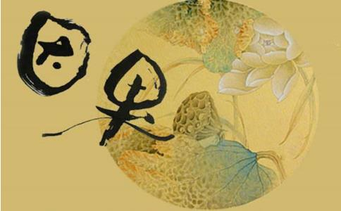

回忆我从年轻时一路走来，，一家三口都不断的生病，诸事不顺，
古人言：
我小的时候，身体虚弱经常生病，父亲经常用小车推着我去城里的医院看病；娘也经常背着我到处找人看病。由于小时多病，给父母精神上造成了很大的折磨。上初中时学校在离家有五里路的邻村，所以每天要捎两顿饭。因为是每天步行去学校所以早晨走得很早，母亲每天起得比我还早把我要带的饭菜做好，上学两年来从未耽误一次。上高中后需要住校，尽管当时
我是“文化大革命”时期长大的，那时家里非常贫穷，少吃缺穿，吃的穿的全靠自己动手做，娘一双小脚进进出出，上上下下，一年四季七口人的穿衣，一天三顿饭全靠娘一人承担。长大上班后娘已经七十多岁了每次回家娘都张罗着做饭，我却不会也不去帮着娘做点家务，也不理解父母的心。我真是麻木不仁，不懂的
我结婚时，由于当时父母年纪大了不能操办而哥嫂都非常忙没有帮忙的。鉴于当时的条件限制简单的举行了一下，我当时操办的能力非常有限，为了不麻烦父母，没有请父母到场。但是事后没有让父母喝上一口喜酒感到内疚，在这里向父母道歉，请父母谅解。
父母年迈后，我更没有对老人知冷知热，体贴关照，把老人放在心上。没有还老人的心，更没有理解老人的心，没以心还心。没报父母恩，我没有
结婚后我6个月大的儿子就患了肺炎，治疗了5 年才得以痊愈。根据刘善人的讲道，孩子得肺炎是我亏欠孝道。在这里向我的父亲、母亲深深的忏悔！我错了！
二、色的方面。万恶淫为首，父精母血阴阳结合而成人体岂是乱来的？如果乱来就是出卖父母精血，出卖自己的灵魂。一起邪淫心。就好比自家的电随便接了外界的电源，就短路，就会烧坏电器，一家三代都会受牵连。淫人妻女，远报儿女，近报己身。
上大学时就染上了
君子爱财取之有道，不是自己劳动智慧换来的不可取。若贪不义之财，会招来横祸，引病上身。
我在政府机关一个经济主管部门工作，和企业打交道很多，也贪了不少的不义之财。用公款吃喝、吃喝企业的那是家常便饭。给企业办事收礼，向企业报销发票，给企业写材料要好处费；给单位办业务时暗地要回扣，出发时用公款购物自己用，用公款买手机，多开发票向单位报销，报销假车票；用公款宴请老师同学朋友；用公款为自己办事送礼；用公车办私事，烧公家的油。还偷单位的信纸、稿纸私用；偷单位的灯管，锤子，钉书机等等。只要有机会就贪。给个人亲戚办事也收礼、收钱。真是视钱如命。尽管贪了不少钱，但是一家三口人一齐生病，钱都花在了看病上了还不够。真是“挖耳”捞进，“钉耙”撘出，还要连皮带肉。这就是害人又害己啊！在有生之年，尽我一切所能，将不义之财逐步退赔，以弥补自己的过失。
我根本上就是一个最大的恶人。所以感得全家人疾病缠身，家庭事业不顺。通过听了圣云法师（慈云老师）讲因果的课后，我们